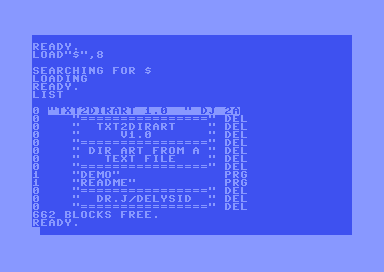

txt2dirart
One text file in, one disk with directory art out

What the drive prints after LOAD"$",8:
0 "DR.J/DELYSID " DJ 2A
0 "================" del
0 " DR.J/DELYSID " del
0 "================" del
3 "CRACKTRO " prg
6 "HRTRAINER " prg
1 "NOTE " prg
The listing draws a picture. The files still load.
What directory art is
A 1541 directory is a chain of 32-byte entries living on track 18. Each entry has a file type, a start sector, a 16-character name and a block count.
Write an entry whose type is a closed DEL with a block count of zero, and the drive lists it like any other entry, but it owns no sectors, points at no data, and loading it does nothing. It is a free row of 16 characters in the listing. Sixteen characters wide, as many rows as track 18 has room for. That is your canvas.
The scene has been doing this since the eighties. This tool just makes it scriptable.
Why I wrote it
I wanted directory art on a demo disk and could not find a comfortable way to do it from the command line. The existing options either ask you to draw by hand inside a graphical disk editor, or touch the files already sitting on the disk. So I wrote my own. One text file in, one D64 out, and the files that were on the disk load afterwards exactly as they did before.
No dependencies and no install. The Windows and Linux binaries need nothing on the machine, not even Python.